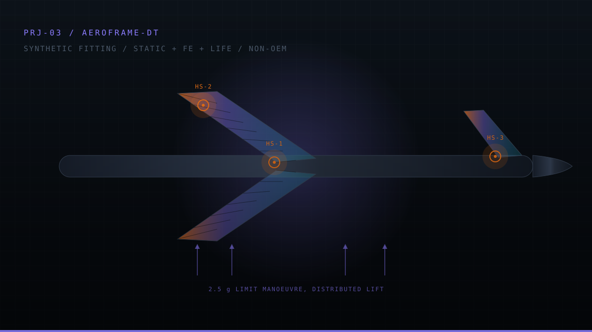

Home / Projects / AeroFrame-DT
AeroFrame-DT
STRESS · FE VERIFICATION · ALLOWABLES · FATIGUE · DAMAGE TOLERANCE · DIGITAL THREAD
A structural-analysis project built to look less like a one-off FEA screenshot and more like substantiation: derive the load basis, do the hand work, use FE to test assumptions, audit the material data, propagate corrections, and preserve the cases where the original answer was wrong.

01Scope
The object is a forward pylon-to-wingbox attachment fitting on an MD-11-class synthetic configuration. Geometry and load cases are portfolio test data, not OEM aircraft data. Material allowables, fatigue curves and fracture data are taken from named published sources in the repository with table-level provenance.
The project demonstrates stress-engineering method, verification and configuration discipline. It does not substantiate an MD-11 flight article and is not checked or approved by a licensed stress engineer.
02Governing result
The governing baseline uses 7050-T7451 plate. Combined bearing/transverse behavior at the lug bore governs the margin. The negative method-scatter result is retained because a positive nominal margin is not the same as robustness to modeling uncertainty.
03Analysis chain
| Stage | Question | Method |
|---|---|---|
| Loads | What is the declared structural demand? | Free-body / provenance-controlled load basis |
| Static strength | Which local mode governs? | Classical lug, bearing, shear-out, pin and fastener checks |
| FE verification | Do the assumptions behind the hand method hold? | Linear, contact, elastic-plastic, modal and buckling models plus benchmark problems |
| Allowables | Is the material data current and applicable? | MMPDS citation audit and material reselection |
| Life | What does cyclic damage imply? | Miner safe-life and Paris crack-growth / critical-flaw calculations |
| Manufacturing | Does tolerance / stock / inspection change the answer? | Tolerance stack, process planning, inspection and cost trades |
| Configuration | Can the analysis survive a rework cycle? | Revision-aware JSON/SQLite/DOT digital thread and process change notice |
04The useful result was often that the first answer was wrong
The margin moved by a factor of roughly 4.7 across the analysis history. A thick-lug correction removed an invalid uniform-bearing assumption. An allowable audit found the assumed strength optimistic. A later source audit found the originally selected 7075-T7351 plate was not tabulated thick enough for the required stock envelope, forcing a change to 7050-T7451.
That material change then reopened a fatigue requirement that had previously been considered blocked, because the replacement temper had an applicable S/N data set. The project preserves those revisions instead of rewriting the initial report to make the path look linear.
| Stage | Margin | Engineering change |
|---|---|---|
| Initial hand analysis | +0.710 | Initial assumptions |
| Thick-lug correction | +0.165 | Uniform-bearing assumption removed |
| Real A-basis allowables | +0.078 | Material strength basis corrected |
| Elastic-plastic contact | +0.156 | Local yielding redistribution measured |
| 7050-T7451 reselection | +0.151 | Manufacturable material basis restored |
05Verification examples
- Independent reconstruction of the hand method agrees to 0.06%.
- Refined FE equilibrium closes to 0.006%.
- Contact-model equilibrium closes to approximately 10 ppm in the recorded runs.
- Continuum cantilever benchmark agrees within 0.20%; plate-bending benchmark within 0.62%.
- Two damage-tolerance implementations agree to 7% on critical crack.
- Exact and linearized tolerance-stack sensitivity agree to 0.1%.
- Predictions are frozen before several correlation runs, and failed predictions remain in the record.
06Claim boundary
- Traceable load-to-margin analysis workflow
- Hand / FE assumption checking
- Published allowables governance
- Fatigue and damage-tolerance calculations
- Manufacturing / tolerance / inspection integration
- Revision-aware digital thread and requirement checks
- OEM MD-11 geometry or loads
- Certified stress substantiation
- Flight-article approval
- Licensed-engineer signoff
- That the synthetic fitting is representative of any specific production joint
For a recruiter, the value is the correction trail: the project demonstrates that source governance, manufacturability and model-form uncertainty can change the answer as much as the solver itself.